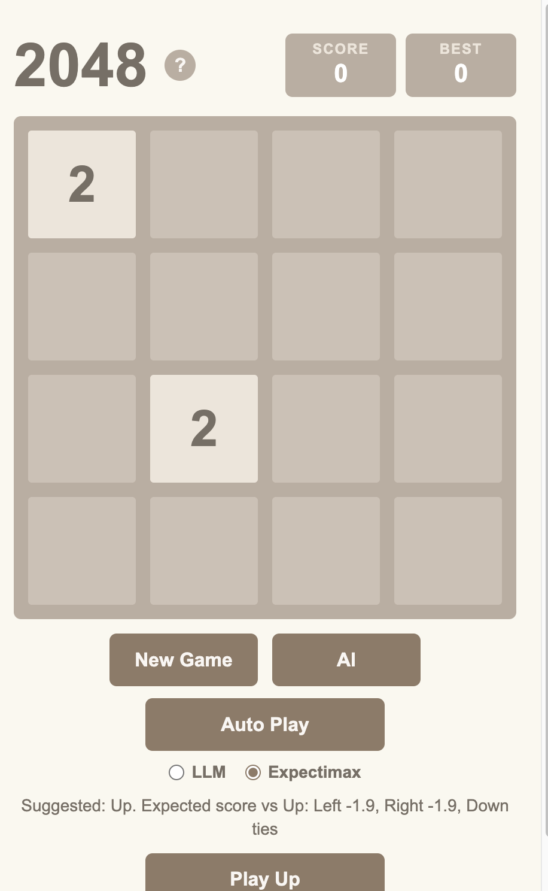
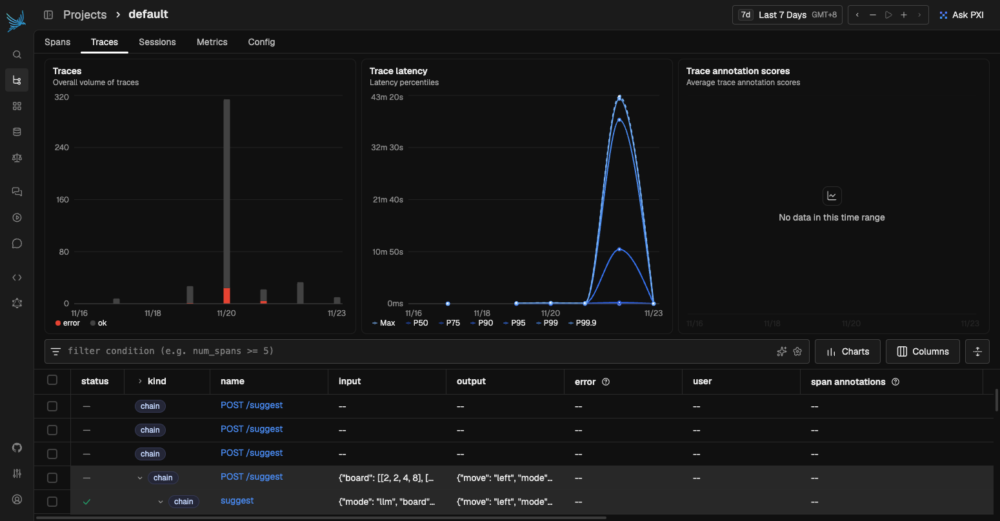
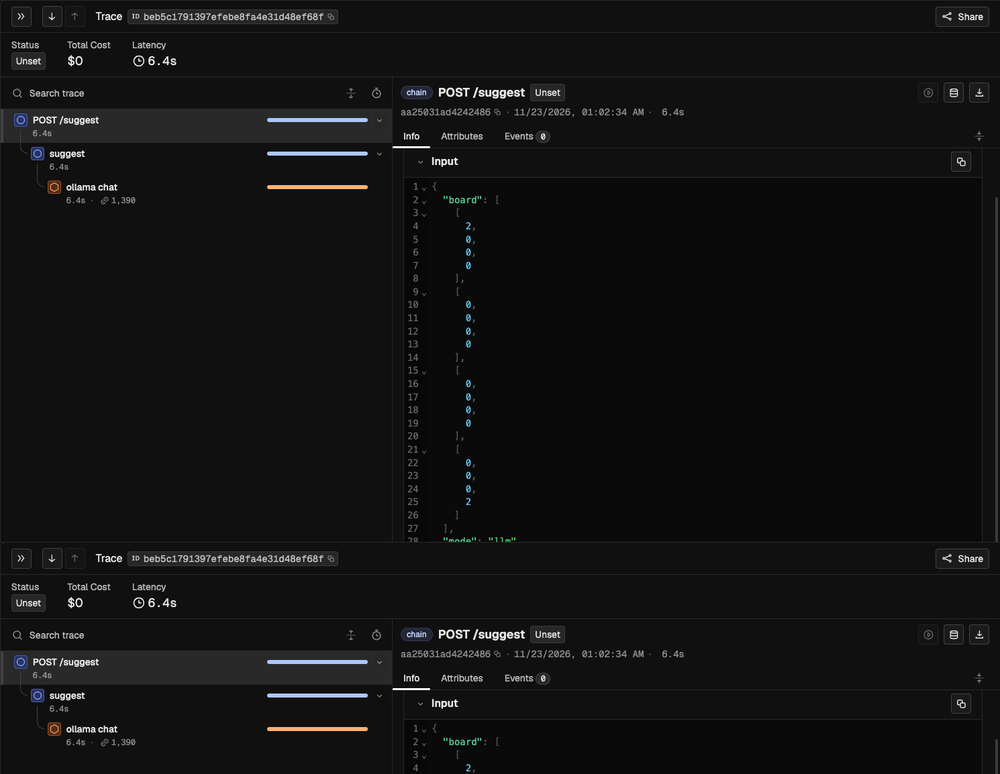
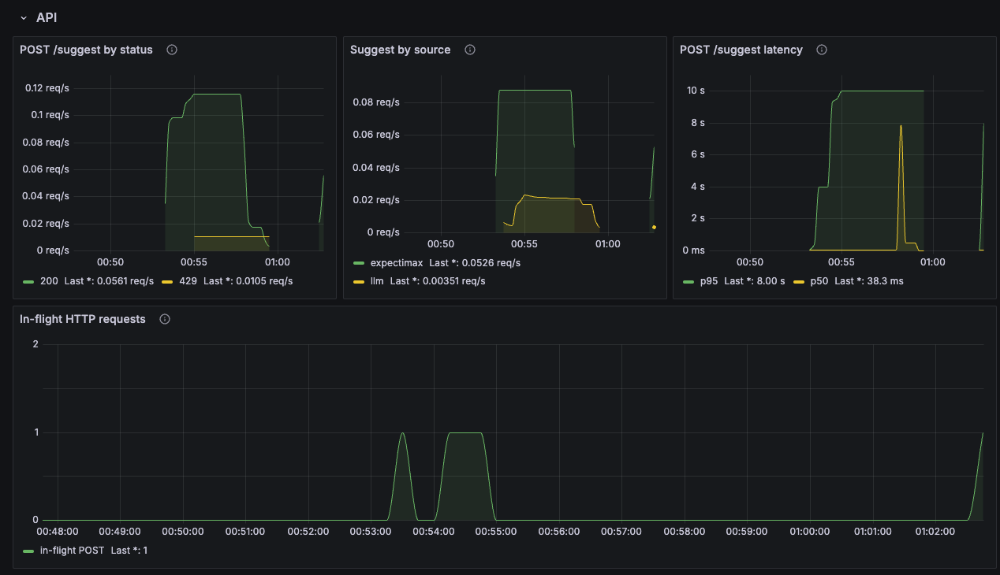
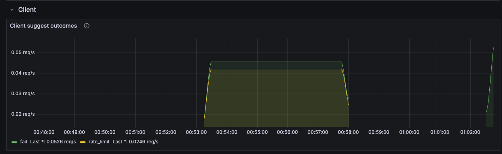
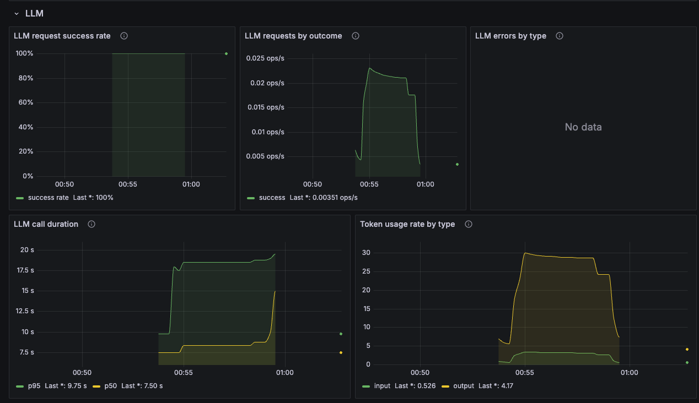

Client
Vite + React. Board rules local; suggest over HTTP.
Single-player 2048 with an optional AI coach (LLM via Ollama or Expectimax), Auto Play, and local ops (Phoenix traces + Prometheus / Grafana).
Vite + React. Board rules local; suggest over HTTP.
FastAPI. LLM via Ollama, or depth-limited expectimax.
OTLP → Phoenix on the host (optional collector).
GET /metrics → Prometheus → Grafana (Compose profile).
Same-origin proxy to the API. Prometheus scrapes the API; Grafana only talks to Prometheus. Phoenix receives OTLP from the API.
flowchart LR
UI[Client] --> Proxy[Vite / nginx]
Proxy -->|/suggest · /client-events| API[FastAPI]
API -->|LLM| Ollama
API -->|OTLP| Phoenix
Prom[Prometheus] -->|scrape /metrics| API
Grafana --> Prom
Board starts with a random count of 2s (1–16); hard win at 2048. Pick mode → AI (or Auto Play) → hint + Play. Stop during Thinking aborts the in-flight suggest. Auto Play retries on capacity-busy 429 and model fallback; stops on spend-cap 429.

Order: validate → spend ceiling → capacity gate → legality → mode.
Invalid bodies do not consume either gate. Two distinct
429s per mode: spend (too many suggestions /
X-Suggest-Limit: spend) vs capacity (model busy /
X-Suggest-Limit: capacity). Disconnect returns 499 and
refunds the spend token / frees the in-flight slot.
flowchart TD
In[board + mode] --> V{valid?}
V -->|no| X422[422]
V -->|yes| S{spend ceiling}
S -->|over| X429s["429 spend"]
S -->|ok| C{mode capacity?}
C -->|full| X429c["429 capacity + refund spend"]
C -->|ok| L{legal moves?}
L -->|none| X409[409]
L -->|yes| M{mode}
M -->|expectimax| EX[search + scores]
M -->|llm| LLM[Ollama + retries]
EX --> OK[SuggestResponse]
LLM --> OK
EX -->|disconnect| C499[499 + refund]
LLM -->|disconnect| C499
Client aborts the fetch on Stop / move / New Game / mode change. Server watches
disconnect on /suggest, cancels that run only, responds 499. The UI stays
silent; the browser beacons cancel so Grafana can see abandons.
sequenceDiagram
participant UI
participant API
participant LLM as Ollama
UI->>API: POST /suggest
API->>LLM: chat
UI-->>API: abort / disconnect
API-->>LLM: cancel
API-->>UI: 499
UI->>API: POST /client-events cancel
Note over UI: silent — no failure hint
cancel, not fail; GenAI scrape can show
cancelled when an Ollama attempt had already opened.Same topics (latency, failures) can appear in both places — the systems answer different questions and do not replace each other.
flowchart TB
subgraph phoenix [Phoenix — one request]
Q1["Why did *this* suggest fail?"]
A1["Prompt · retries · span tree"]
Q1 --> A1
end
subgraph grafana [Grafana — over time]
Q2["Is fallback or 429 rising?"]
A2["Rates · p50/p95 · token burn"]
Q2 --> A2
end
GET /metrics; low-cardinality aggregates.200 can still be model fallback — API status ≠ LLM outcome.
No browser OTel SDK. The client sends a hand-rolled W3C traceparent on
POST /suggest; FastAPI continues that trace into the suggest / LLM spans.
flowchart TB UI["Client creates traceparent"] --> HTTP["POST /suggest span"] HTTP --> SUG["suggest span
board · mode · result"] SUG -->|"llm mode only"| LLM["ollama chat span
prompt · completion · tokens"] SUG -->|"expectimax"| EX["no ollama chat span"] LLM --> EV["span events: TTFT · generation done"]
suggest → optional ollama chat.ollama chat → prompt/completion, model name, token counts, ERROR on bad JSON / illegal move / transport fail.ollama chat children under the same suggest./health, /metrics, /client-events (scrape noise).EXPORT_TRACES defaults on; CI turns it off.
POST /suggest → suggest →
ollama chat.

POST /suggest: tree on the left; Input (board + mode) and
Output (move + reason) on the right. Click ollama chat for prompt /
completion / tokens.
Always-on scrape at GET /metrics. Compose
--profile metrics runs Prometheus + a provisioned GenAI ops dashboard.
Client outcomes come from thin /client-events beacons (not Phoenix):
fail / rate_limit (spend) / model_busy (capacity) /
cancel.
flowchart LR
API["API /metrics"] --> Prom[Prometheus]
Prom --> Graf[Grafana]
UI[Client] -->|fail · rate_limit · model_busy · cancel| CE[/client-events/]
CE --> API
What each chart answers (same order as the dashboard rows)
API
Are we getting 200, or 429 / 422 / 409 / 499?
Is the coach returning llm, expectimax, or fallback?
Capacity-busy vs spend-cap 429 volume (suggest_limit_reject_total).
Wall-time p50 / p95 for /suggest under load.
Overlapping POSTs right now (usually 0; spikes = multi-tab / slow LLM).
Client
Browser beacons: fail vs spend rate_limit vs capacity
model_busy vs cancel.
LLM
Share of Ollama attempts that succeed (cancelled excluded).
Success vs error / timeout / cancelled over time.
Which failure modes dominate when the model path breaks?
Model-call p50 / p95 (not the full HTTP /suggest time).
Prompt vs completion token burn over time.
cancel, not
fail./client-events bounds beacon volume independently of suggest buckets.

rate_limit / capacity
model_busy / cancel (UI abort stays silent).

cancel (and LLM cancelled when an attempt opened).
model busy retries; Grafana reject reasons split.
--profile metrics; panels move;
scrape contract is GET /metrics.
Phoenix is host-side (not Compose). Board + Expectimax alone is enough for a fast product
pass; full ops needs Ollama + collector + metrics profile. For deeper automated proof
without reading code (unit, HTTP contract, disconnect cancel, image smokes, and opt-in
pytest --load), see the verification checklist in
docs/agents/server.md.